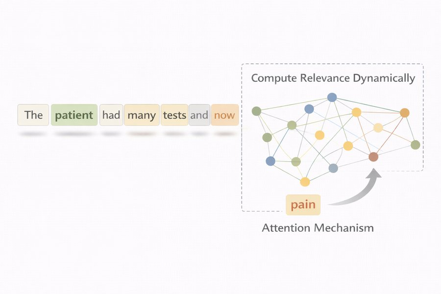

17 Attention and the transformer
When you read a sentence, you constantly look back. For each sentence below, choose the earlier word you need to look back at to interpret the word in bold. Take your best guess — the chapter turns this habit into mathematics.
| Sentence | Look back at |
|---|---|
| "Aoife was started on vancomycin on Monday, and tonight her creatinine is rising." | |
| "The nurse checked the infusion pump and found that it had stopped." | |
| "Tomás denies any chest pain." | |
| "After two doses of furosemide, Priya's potassium has fallen." |
How to use this chapter
Starting here?
This chapter builds directly on the two chapters before it and on the neural networks of Chapter 7. In a few lines:
- Text is cut into tokens (words or pieces of words) drawn from a vocabulary \(\mathcal{V}\); the token at position \(t\) is written \(w_t\) (Chapter 15).
- A language model gives a probability to a sequence of tokens. By the chain rule of probability, \(P(w_1, \dots, w_T) = \prod_{t=1}^{T} P(w_t \mid w_{<t})\), so the whole job reduces to predicting the next token from the ones before it. An n-gram model looks only at the last \(n-1\) tokens; a recurrent network (RNN) squeezes the whole past into one hidden vector (Chapter 16).
- Each token is represented by an embedding, a learned vector \(\mathbf{e}_w\) of numbers in which similar words end up close together (Chapter 16).
- The softmax turns a vector of scores \(z_1, \dots, z_C\) into probabilities that are positive and add up to 1, \(e^{z_c} / \sum_{c'} e^{z_{c'}}\) (Chapter 7); a language model uses it to give a probability to every possible next token, and it is trained by minimising the cross-entropy, the average of \(-\log P(\text{observed next token})\) (Chapter 16).
- A neural network is built from layers of weighted sums followed by a nonlinear activation; its weights are learned by gradient descent, with gradients computed by backpropagation (Chapter 7). A model is a simplified representation built for a purpose (Definition 1.3), and it supplies information to a decision (Definition 1.4).
| Example | Who or what | Outcome | Faces you will meet |
|---|---|---|---|
| 1 Ward 7 ICU | 1 250 ICU patients in 4 hospitals | change in creatinine over 48 h (acute kidney injury if ≥ 0.3 mg/dL) | Aoife (71, sepsis, borderline risk), Tomás (54, low risk), Priya (38, high risk); Dr Emma Walsh; Seán, the pharmacist |
| 2 ONCO-1 trial | 1 000 patients randomised to chemotherapy or not | tumour shrinkage (%) | patients #0042 and #0917 |
| 3 HomeBeat | 500 people wearing a smartwatch at home | stress score, deterioration event | Lena |
| 4 CellWorks | 420 production batches of a cell therapy | potency score | batch CW-118 |
All four datasets are simulated and can be downloaded from the data appendix. The full introduction is in Section 1.1.
The clinical notes in this chapter are short synthetic texts written for the book; they describe no real patient.
This chapter explains how a transformer reads. It has twelve sections and a Lab, eight quick checks, three “Try it” widgets, a challenge and three coding missions in R and Python. Allow about two hours. The maths is mostly multiplying small tables of numbers; the refresher below gives you everything you need. Nothing heavy runs in your browser: the small transformer of Section 17.10 was trained once, and its results are loaded from files.
Notation at a glance (for lookup only)
| Symbol | Meaning | Section |
|---|---|---|
| \(T\) | number of tokens in the sequence (its length) | Section 17.1 |
| \(w_t\) | token at position \(t\) | Section 17.1 |
| \(\mathbf{x}_t\), \(\mathbf{X}\) | vector of token \(t\) entering a layer; the \(T \times d\) matrix of all of them | 1 |
| \(d\) | model dimension: length of each token vector | 1 |
| \(\mathbf{q}_t, \mathbf{k}_t, \mathbf{v}_t\); \(\mathbf{Q}, \mathbf{K}, \mathbf{V}\) | query, key and value of token \(t\); their matrices | 1 |
| \(\mathbf{W}_Q, \mathbf{W}_K, \mathbf{W}_V, \mathbf{W}_O\) | learned projection matrices | 1, Section 17.5 |
| \(d_k\) | length of query and key vectors | 1 |
| \(\alpha_{ts}\) | attention weight of query position \(t\) on key position \(s\) | Section 17.2 |
| \(\mathbf{c}_t\) | output of attention for position \(t\) (its context vector) | Section 17.2 |
| \(\mathbf{M}\) | mask matrix (0 = allowed, \(-\infty\) = blocked) | Section 17.4 |
| \(h\) | number of attention heads | Section 17.5 |
| \(\mathbf{p}_t\) | positional encoding of position \(t\) | Section 17.6 |
| \(\operatorname{LN}\), \(\operatorname{FFN}\) | layer normalisation; position-wise feed-forward network | Section 17.7 |
| \(d_{\text{ff}}\), \(N\) | width of the feed-forward hidden layer; number of stacked blocks | Section 17.7 |
| \(\mathbf{E}\) | embedding matrix (\(\lvert\mathcal{V}\rvert \times d\)), one row \(\mathbf{e}_w\) per token | Section 17.8 |
| \(\mathbf{z}_t\) | logits: one score per vocabulary token at position \(t\) | Section 17.8 |
The full list is on the notation page.
A two-minute refresher on vectors and matrices
- A vector is a list of numbers, such as \(\mathbf{a} = (2, 0)\). The dot product of two vectors of the same length multiplies them entry by entry and adds up: \((2, 0) \cdot (1, 3) = 2 \times 1 + 0 \times 3 = 2\). It is large and positive when the two vectors point the same way, near zero when they are unrelated, and negative when they point in opposite directions.
- A matrix is a table of numbers; \(\mathbf{X}\) with \(T\) rows and \(d\) columns is “\(T \times d\)”. Here each row is one token.
- The matrix product \(\mathbf{A}\mathbf{B}\) is a table of dot products: entry \((t, s)\) is the dot product of row \(t\) of \(\mathbf{A}\) with column \(s\) of \(\mathbf{B}\). It needs the number of columns of \(\mathbf{A}\) to equal the number of rows of \(\mathbf{B}\): a \(T \times d\) matrix times a \(d \times d_k\) matrix gives a \(T \times d_k\) matrix.
- The transpose \(\mathbf{B}^{\top}\) swaps rows and columns. So \(\mathbf{Q}\mathbf{K}^{\top}\) is the table of dot products between every row of \(\mathbf{Q}\) and every row of \(\mathbf{K}\).
- In R, the matrix product is
A %*% Band the transposet(B); in Python (numpy) they areA @ BandB.T.
17.1 Why looking back is hard
Every language model, from the simplest to the largest, estimates the same thing: the probability of the next token given the ones before it, \[ P(w_t \mid w_{<t}) = P(w_t \mid w_1, w_2, \dots, w_{t-1}) . \qquad(17.1)\] The chain rule that leads to Equation 17.1 is an identity: it does not assume that words are independent, it simply writes the probability of a whole sentence as a product of next-token predictions (Chapter 16). What differs between models is not this objective but how they represent the context \(w_{<t}\) — how much of it they can see, and how they decide which parts matter.
In Seán’s note the decisive words, vancomycin and contrast, are far from the word being interpreted. Real clinical language is full of such long-range dependencies: a pronoun refers to a patient named sentences earlier; a negation such as “denies” changes the meaning of a symptom several words later; an instruction at the top of a letter governs everything below it. Earlier models handle them badly, in two ways (Jurafsky and Martin 2026).
- A fixed window. An n-gram model keeps only the last \(n-1\) tokens, \(P(w_t \mid w_{<t}) \approx P(w_t \mid w_{t-n+1}, \dots, w_{t-1})\). Anything earlier is invisible. Widening the window does not rescue it: the number of possible contexts grows exponentially with \(n\), so most long contexts are never seen in training.
- A bottleneck. A recurrent network reads one token at a time and carries a single hidden vector forward, \(\mathbf{h}_t = g(\mathbf{h}_{t-1}, \mathbf{e}_{w_{t-1}})\). In principle it can remember anything; in practice the whole past must squeeze into one vector of fixed length, and information from far back fades (Hochreiter and Schmidhuber 1997; Y. Bengio, Simard, and Frasconi 1994).

The code below rebuilds the toy example of the earlier edition of this book. Every sentence starts with “the patient” or “the trial”, continues with a random number of uninformative words, and ends with the word to be predicted: pain after a patient, events after a trial. The second word fully determines the last one, but it is buried at the start. For each window size \(k\), the code checks how often the decisive word is among the last \(k\) words before the target.
With a window of two words, the decisive word is never visible; with twelve it always is, but only because these sentences are short. The model fails not because the information is absent, but because its conditioning rule cannot reach it. Attention changes the rule: keep every earlier token available, and let the model compute, for each prediction, how much each one matters.
A trigram model (window of two words) reads Seán’s note and must judge the word after “passed very little …”. Why can it not use the fact that Aoife is on vancomycin?
17.2 Attention: a soft, learned look-up
Think of how Seán uses the drug chart. He has a question in mind (“is anything on this chart toxic to the kidneys?”). Each line of the chart has a label (the drug name) and content (dose, route, start date). He compares his question with every label, and reads the content of the lines that match. A database does the same with exact matches: one query, one matching key, one value returned.
Attention is a soft version of this look-up. Instead of returning the content of the single best match, it returns a weighted average of all the contents, with weights that grow with how well each label matches the question. The weights are positive and add up to 1, so they behave like probabilities: a share of attention given to each earlier token.
Definition 17.1 (Attention) Attention is an operation that builds a new representation for a position \(t\) as a weighted average of the representations of the positions it may look at, \[ \mathbf{c}_t = \sum_{s} \alpha_{ts}\, \mathbf{v}_s, \qquad \alpha_{ts} \ge 0, \quad \sum_{s} \alpha_{ts} = 1 , \qquad(17.2)\] where \(\mathbf{v}_s\) is the content (value) offered by position \(s\) and the attention weight \(\alpha_{ts}\) measures how relevant position \(s\) is to position \(t\). The weights are computed from the data themselves, separately for every position and every input. When the positions belong to the same sequence, the operation is called self-attention.
Two features make attention different from everything in Chapter 16. First, nothing is thrown away: every earlier token remains directly reachable, however far back it is. Second, the weights are not fixed by position (“the last two words”) but computed from the content: the same position can be ignored in one sentence and be decisive in the next.
The idea was introduced for machine translation. Bahdanau, Cho, and Bengio (2015) let a recurrent translation model, at each output word, look back over all the words of the source sentence and weight them — the model learned on its own to align each French word with the English words it translated. Vaswani et al. (2017) then asked whether recurrence was needed at all, and built a model in which attention does all the work of moving information between positions. They called it the transformer. The rest of this chapter takes it apart.
For the word “urine” in Seán’s note, a model gives the same attention weight to each of the 30 earlier tokens. What is \(\mathbf{c}_t\), the output of attention for “urine”?
17.3 Queries, keys and values
Where do the weights come from? Each token plays three roles at once, and the transformer gives it three different vectors, one for each role.
Definition 17.2 (Query, key and value) Each token vector \(\mathbf{x}_t\) entering an attention layer is multiplied by three learned matrices to give \[ \mathbf{q}_t = \mathbf{x}_t \mathbf{W}_Q, \qquad \mathbf{k}_t = \mathbf{x}_t \mathbf{W}_K, \qquad \mathbf{v}_t = \mathbf{x}_t \mathbf{W}_V . \] The query \(\mathbf{q}_t\) describes what position \(t\) is looking for; the key \(\mathbf{k}_s\) describes what position \(s\) offers to be found by; the value \(\mathbf{v}_s\) is the content that position \(s\) passes on when it is attended to. Stacking the rows gives the matrices \(\mathbf{Q} = \mathbf{X}\mathbf{W}_Q\), \(\mathbf{K} = \mathbf{X}\mathbf{W}_K\) and \(\mathbf{V} = \mathbf{X}\mathbf{W}_V\).
The matrices \(\mathbf{W}_Q\), \(\mathbf{W}_K\) and \(\mathbf{W}_V\) are ordinary weights of a neural network, learned by gradient descent like those of Chapter 7. Nobody tells the model that “pain” should look for negations or that “denies” should advertise itself as one: the model discovers whatever queries and keys make its predictions better. Attention is therefore not a rule applied to text from outside — it is a learned neural computation.
The match between a query and a key is measured by their dot product, which is large when the two vectors point the same way. Dividing by \(\sqrt{d_k}\) and applying a softmax to each row turns the matches into weights, and the weights average the values. In matrix form this is the formula at the heart of every transformer (Vaswani et al. 2017): \[ \operatorname{Attention}(\mathbf{Q}, \mathbf{K}, \mathbf{V}) = \operatorname{softmax}\!\left( \frac{\mathbf{Q}\mathbf{K}^{\top}}{\sqrt{d_k}} \right) \mathbf{V} , \qquad(17.3)\] where the softmax is applied to each row separately. Row \(t\) of the result is \(\mathbf{c}_t\) of Equation 17.2, and row \(t\) of the softmax holds the weights \(\alpha_{t1}, \dots, \alpha_{tT}\). Figure 17.2 follows the computation step by step.
17.3.1 Why divide by \(\sqrt{d_k}\)?
The scaling is not decoration. A dot product adds up \(d_k\) products, so as the vectors get longer the scores spread out. If the entries of queries and keys are roughly independent with mean 0 and variance 1, the dot product has variance \(d_k\), so its typical size grows like \(\sqrt{d_k}\) (Vaswani et al. 2017). Large scores push the softmax to extremes: one token takes almost all the weight, the others almost none, and the gradients that training relies on become tiny. Dividing by \(\sqrt{d_k}\) brings the scores back to a spread of about 1 whatever the dimension. The simulation below draws random queries and keys and shows it (Table 17.1).
| Dimension d_k | √d_k | SD of raw scores | SD after dividing by √d_k |
|---|---|---|---|
| 4 | 2 | 1.98 | 0.99 |
| 16 | 4 | 4.03 | 1.01 |
| 64 | 8 | 8.04 | 1.00 |
| 256 | 16 | 15.79 | 0.99 |
The raw spread tracks \(\sqrt{d_k}\); after scaling it stays close to 1. The next widget lets you feel what the scaling does, and what the query and the keys do, on a four-word clinical sentence.
Attention by hand. The sentence is “patient denies chest pain”, and we update the vector for pain. To keep everything visible, queries, keys and values have only two coordinates (\(d_k = 2\)). Think of the first coordinate of a key as “I am a negation word” and the second as “I am a body site”; the values carry a negation signal and a body-site signal. Move the query of “pain” and watch the scores \(\mathbf{q}\cdot\mathbf{k}_s / \sqrt{d_k}\), the softmax weights and the output \(\mathbf{c} = \sum_s \alpha_s \mathbf{v}_s\) change. Open the panel to edit the keys. Target: make “pain” put at least 60 % of its attention on “denies”, so that its new vector carries the negation — exactly what a note-reading tool needs to avoid flagging a symptom the patient does not have.
Edit the keys
Three things to notice. First, the weights depend on the query: the same keys produce very different weights for a query that looks for negation and for one that looks for body sites. Second, the output is a blend of values, so “pain” can carry a negation signal it did not have before — its vector has been contextualised. Third, switch the scaling off and make the query long: the weights snap to almost 0 and 1. That is the saturation the \(\sqrt{d_k}\) protects against.
The same computation on a five-word sentence, with random vectors standing in for learned ones, is below. Run it line by line: each step is one box of Figure 17.2.
Because the vectors are random, the weights carry no linguistic meaning yet — “the” may attend mostly to “reports” for no good reason. Training is what turns \(\mathbf{W}_Q\), \(\mathbf{W}_K\) and \(\mathbf{W}_V\) into matrices whose weights make sense; Section 17.10 shows a trained example.
A colleague removes the division by \(\sqrt{d_k}\) from a transformer with \(d_k = 256\). What is the most likely consequence?
Scaled dot-product attention in four lines. The queries, keys and values of “patient denies chest pain” from the widget are loaded for you as Q, K and V (one row per token, \(d_k = 2\)). Fill in the line that computes the scaled scores of Equation 17.3. The rest applies the softmax to each row and averages the values.
Use %*% for the matrix product, t() for the transpose and sqrt() for the square root.
scores <- Q %*% t(K) / sqrt(d_k)Use @ for the matrix product, .T for the transpose and np.sqrt() for the square root.
scores = Q @ K.T / np.sqrt(d_k)17.4 Masks: who may look at whom
So far every token could attend to every other, including the ones after it. For a model that reads a whole note and classifies it, that is exactly what we want. For a model that generates text one token at a time, it is cheating. The chain rule in Equation 17.1 asks for the probability of \(w_t\) given the tokens before it. If, during training, position \(t\) could look at position \(t+1\), the model would simply copy the answer it is supposed to predict, and it would learn nothing it could use when the future is genuinely unknown.
The fix does not change the attention computation; it changes the scores before the softmax.
Definition 17.3 (Causal mask) A causal mask stops each position from attending to later positions. A mask matrix \(\mathbf{M}\) with \(M_{ts} = 0\) if \(s \le t\) and \(M_{ts} = -\infty\) if \(s > t\) is added to the scores, \[ \operatorname{softmax}\!\left( \frac{\mathbf{Q}\mathbf{K}^{\top}}{\sqrt{d_k}} + \mathbf{M} \right) \mathbf{V} . \qquad(17.4)\] Because \(e^{-\infty} = 0\), every blocked position receives a weight of exactly zero, and the remaining weights in each row still add up to 1. The allowed positions form a lower triangle: token \(t\) sees itself and everything before it, never anything after (Vaswani et al. 2017; Radford et al. 2018).
Other masks use the same trick. A padding mask blocks the filler tokens added to make notes of different lengths fit in one table, so that no real word attends to them. A model reading a whole note uses no causal mask at all: it is bidirectional, and “pain” can attend to “denies” before it and to “today” after it.
Switch the mask on and off. The table shows the attention weights for “the patient reports chest pain” (rows: the token being updated; columns: the token looked at), computed from a fixed table of scores. Switch on the causal mask, the one used by text-generating models, and watch the upper triangle drop to zero while every row still adds up to 1.
Question: with the mask on, which token’s row of weights is exactly the same as without the mask?
A text-generating (GPT-style) model processes “the patient reports chest pain”. When it builds the representation of the third token, “reports”, which tokens can it attend to?
Apply a causal mask. The scores S of the widget (rows: queries; columns: keys, for “the patient reports chest pain”) are loaded for you. Fill in the one line that sets every score above the diagonal to minus infinity; the code then applies the softmax to each row.
upper.tri(S_masked) is a logical matrix that is TRUE above the diagonal; use it to index S_masked and assign -Inf.
S_masked[upper.tri(S_masked)] <- -Infnp.triu_indices(5, k=1) returns the row and column indices strictly above the diagonal; use them to index S_masked and assign -np.inf.
S_masked[np.triu_indices(5, k=1)] = -np.inf17.5 Many heads, many relationships
One attention operation produces one set of weights per token — one notion of relevance. But a clinical sentence carries several relationships at once. For “creatinine” in Seán’s note, one relevant link is to the drug (why is it being checked?), another to the patient (whose creatinine?), another to the time (since when?). Asking a single set of weights to capture all of them makes it a bottleneck.
Definition 17.4 (Multi-head attention) Multi-head attention runs \(h\) attention operations, called heads, side by side, each with its own projection matrices \(\mathbf{W}_Q^{(m)}, \mathbf{W}_K^{(m)}, \mathbf{W}_V^{(m)}\), so that each head can learn its own notion of relevance: \[ \text{head}_m = \operatorname{Attention}\big(\mathbf{X}\mathbf{W}_Q^{(m)},\, \mathbf{X}\mathbf{W}_K^{(m)},\, \mathbf{X}\mathbf{W}_V^{(m)}\big), \qquad m = 1, \dots, h . \] The outputs of the heads are placed side by side (concatenated) and mixed by one more learned matrix \(\mathbf{W}_O\): \[ \operatorname{MHA}(\mathbf{X}) = \big[\text{head}_1, \dots, \text{head}_h\big]\, \mathbf{W}_O . \qquad(17.5)\] Usually each head works with vectors of length \(d_k = d/h\), so the heads together cost about the same as one large head.
In trained models, heads do specialise. Studying BERT, Clark et al. (2019) found heads that attend to the previous or next word, heads that link a verb to its direct object, a determiner to its noun, or a pronoun to the noun it refers to — none of which anyone programmed. Specialisation is not guaranteed, though, and many heads have patterns that resist a simple description. The original transformer used \(h = 8\) heads with \(d = 512\) (Vaswani et al. 2017); BERT-base uses 12 heads with \(d = 768\) (Devlin et al. 2019).
A transformer has model dimension \(d = 512\). Its designers switch from 8 heads of size \(d_k = 64\) to 16 heads of size \(d_k = 32\). What happens to the number of weights in \(\mathbf{W}_Q\), \(\mathbf{W}_K\), \(\mathbf{W}_V\) and \(\mathbf{W}_O\) together?
17.6 Word order: positional encodings
There is a surprising gap in everything so far. Look again at Equation 17.3: the scores compare vectors, and nothing in them says where a token is. Shuffle the rows of \(\mathbf{X}\) and the outputs are shuffled in the same way but otherwise unchanged. Attention treats its input as a set of tokens, not a sequence. Yet order carries meaning: “creatinine rose after vancomycin was started” and “vancomycin was started after creatinine rose” contain the same words and tell opposite clinical stories.
Definition 17.5 (Positional encoding) A positional encoding is a vector \(\mathbf{p}_t\), one for each position \(t\), added to the token embedding before the first layer, so that every input vector carries both what the token is and where it is: \[ \mathbf{x}_t^{(0)} = \mathbf{e}_{w_t} + \mathbf{p}_t . \] The encodings can be fixed functions of the position or learned like any other weight.
The original transformer used fixed waves of different frequencies: coordinate \(2r\) of \(\mathbf{p}_t\) is \(\sin(t / 10000^{2r/d})\) and coordinate \(2r+1\) is \(\cos(t / 10000^{2r/d})\), so each position gets a unique pattern and nearby positions get similar ones (Vaswani et al. 2017). BERT and the GPT models instead learn one vector per position (Devlin et al. 2019; Radford et al. 2019), which is also what the small model in Section 17.10 does. Many recent models encode relative position by rotating queries and keys by an angle that depends on the position, so that the score between two tokens depends on how far apart they are (Su et al. 2024).
A transformer without any positional information reads “creatinine rose after vancomycin was started” and “vancomycin was started after creatinine rose”. What can it tell about the two sentences?
17.7 The transformer block
Attention moves information between tokens. On its own it is not yet a model. The transformer wraps it in a block with three more ingredients — a feed-forward network, residual connections and layer normalisation — and stacks many identical blocks.
The feed-forward network. After attention has mixed information across positions, each token’s vector goes, on its own, through a small neural network of the kind met in Chapter 7: a hidden layer, usually four times wider than \(d\), with a nonlinear activation \(g\), and back to width \(d\): \[ \operatorname{FFN}(\mathbf{x}) = g(\mathbf{x}\mathbf{W}_1 + \mathbf{b}_1)\,\mathbf{W}_2 + \mathbf{b}_2 . \] The same weights are applied at every position. A useful slogan: attention decides where to look; the feed-forward network decides what to do with what was found. Without it, a stack of attention layers could only form weighted averages of value vectors. The activation \(g\) is usually ReLU or its smooth cousin GELU (Nair and Hinton 2010; Hendrycks and Gimpel 2016).
Definition 17.6 (Residual connection and layer normalisation) A residual connection adds a sublayer’s input to its output, \(\mathbf{x} + F(\mathbf{x})\), so the sublayer only has to learn a correction to the current representation; it also gives gradients a direct path through deep stacks (He et al. 2016). Layer normalisation rescales each token vector to mean 0 and standard deviation 1 across its \(d\) coordinates and then applies a learned gain \(\mathbf{g}\) and shift \(\mathbf{b}\), coordinate by coordinate: \(\operatorname{LN}(\mathbf{x}) = \mathbf{g} \odot (\mathbf{x} - \mu)/\sigma + \mathbf{b}\), where \(\mu\) and \(\sigma\) are the mean and standard deviation of the entries of \(\mathbf{x}\) and \(\odot\) is entry-by-entry multiplication (Ba, Kiros, and Hinton 2016). It keeps the numbers in a stable range as they pass through many layers.
Where exactly the normalisation goes matters, and two arrangements are in use. The original transformer normalised after adding the residual (post-LN): \(\mathbf{X}' = \operatorname{LN}(\mathbf{X} + \operatorname{MHA}(\mathbf{X}))\) (Vaswani et al. 2017). GPT-2 moved the normalisation to the input of each sublayer and added a final normalisation after the last block (Radford et al. 2019), and Xiong et al. (2020) showed why this pre-LN arrangement is easier to train: the residual path stays an untouched highway from input to output, gradients are well behaved from the start, and training needs less of the careful “warm-up” of the learning rate that post-LN requires. Most current models use pre-LN, and so does this chapter.
Definition 17.7 (Transformer block (pre-LN)) A transformer block takes a \(T \times d\) matrix of token vectors \(\mathbf{X}\) and returns a matrix \(\mathbf{Y}\) of the same shape: \[ \mathbf{X}' = \mathbf{X} + \operatorname{MHA}\big(\operatorname{LN}(\mathbf{X})\big), \qquad \mathbf{Y} = \mathbf{X}' + \operatorname{FFN}\big(\operatorname{LN}(\mathbf{X}')\big) . \qquad(17.6)\] A transformer stacks \(N\) such blocks, \(\mathbf{H}^{(l)} = \operatorname{Block}_l(\mathbf{H}^{(l-1)})\) for \(l = 1, \dots, N\), starting from \(\mathbf{H}^{(0)}\), the token embeddings plus positional encodings. In a text-generating model the attention in every block is causally masked.
Notice the invariant: every sublayer returns a \(T \times d\) matrix, so the residual additions are always defined and blocks can be stacked as deep as we like. Depth is used for repeated refinement. Studies of trained models suggest that lower layers tend to capture local, surface patterns and higher layers more abstract relationships, although the picture is far from neat (Clark et al. 2019).
Which part of the transformer does each job?
- Lets the vector for “creatinine” pull in information from “vancomycin” twenty tokens earlier. Attention
- Transforms each token’s vector on its own, through a hidden layer four times wider. Feed-forward network
- Adds a sublayer’s input back to its output, so each layer only learns a correction. Residual connection
- Rescales each token vector to mean 0 and standard deviation 1 before a sublayer. Layer normalisation
- Lets the model know that “vancomycin” came before “creatinine”. Positional encoding
- Stops a token from looking at the tokens that come after it. Causal mask
How big is one block? Count the weights. Each of \(\mathbf{W}_Q\), \(\mathbf{W}_K\), \(\mathbf{W}_V\) and \(\mathbf{W}_O\) is \(d \times d\) with a bias of length \(d\); the feed-forward network has a \(d \times d_{\text{ff}}\) matrix with \(d_{\text{ff}}\) biases and a \(d_{\text{ff}} \times d\) matrix with \(d\) biases; each of the two layer normalisations has a gain and a shift of length \(d\). As Exercise 17.1 shows, the feed-forward networks, not the attention, hold most of a transformer’s weights.
Count the weights of a block. The small transformer trained in Section 17.10 has \(d = 32\), \(h = 2\) heads and \(d_{\text{ff}} = 128\). The attention and layer-normalisation counts are written for you. Fill in the number of weights of the feed-forward network (two weight matrices, each followed by its bias vector), and the last line adds everything up.
First layer: d * d_ff + d_ff. Second layer: d_ff * d + d. Add them.
ffn <- (d * d_ff + d_ff) + (d_ff * d + d)First layer: d * d_ff + d_ff. Second layer: d_ff * d + d. Add them.
ffn = (d * d_ff + d_ff) + (d_ff * d + d)Notice that \(h\) appears nowhere in the count: as in the quick check on heads, splitting attention into more heads does not add weights.
17.8 From vectors to the next word
After the last block, each position \(t\) holds a vector \(\mathbf{h}_t\) of length \(d\) that has gathered, through attention, whatever it needs from tokens \(1, \dots, t\). A language model must turn it into a probability for every token of the vocabulary. A linear layer gives one score (logit) per token, and the softmax of Chapter 16 turns scores into probabilities: \[ \mathbf{z}_t = \mathbf{h}_t \mathbf{E}^{\top}, \qquad P(w_{t+1} = v \mid w_{\le t}) = \frac{e^{z_{t,v}}}{\sum_{u \in \mathcal{V}} e^{z_{t,u}}} . \qquad(17.7)\] Here the output layer reuses the embedding matrix \(\mathbf{E}\), a common choice called weight tying (Press and Wolf 2017): the logit of token \(v\) is the dot product \(\mathbf{h}_t \cdot \mathbf{e}_v\), so the model predicts the tokens whose embeddings best match the current state, and it saves a \(d \times \lvert\mathcal{V}\rvert\) matrix of weights. Because of the causal mask, \(\mathbf{h}_t\) depends only on tokens up to \(t\), so Equation 17.7 is a genuine next-token prediction.
Training uses the same loss as in Chapter 16. Every position of every training text provides one prediction, and the model minimises the average cross-entropy, \[ \mathcal{L}_{\text{AR}} = -\frac{1}{T} \sum_{t=1}^{T} \log P(w_t \mid w_{<t}) , \qquad(17.8)\] that is, it maximises the likelihood of the text. No labels are needed — the next token is the label — which is why this is called self-supervised learning. Thanks to the mask, all \(T\) predictions of a text are computed in one parallel pass, which is a large part of why transformers train so much faster than recurrent networks (Vaswani et al. 2017).
Training and generation use the conditional probability differently. During training the model is always given the true previous tokens (this is called teacher forcing (Williams and Zipser 1989)). During generation it feeds on its own previous outputs: it predicts a distribution, picks a token (the most probable one, or a sample, as in Chapter 16), appends it, and repeats. A model can therefore do well on the training loss and still drift during long free-running generation, because one unlikely pick changes everything that follows (S. Bengio et al. 2015).
Putting the pieces together, the full path from text to prediction is: text → tokens → token identifiers → embeddings plus positions → \(N\) transformer blocks → final layer normalisation → logits → softmax → probability of the next token.
17.9 Encoders, decoders and the two families
The original transformer was built for translation, with two stacks (Figure 17.4) (Vaswani et al. 2017). An encoder reads the whole source text with bidirectional self-attention and produces one contextual vector per token. A decoder generates the output one token at a time with causally masked self-attention, and in each block a third sublayer, cross-attention, takes its queries from the decoder and its keys and values from the encoder’s output, so that every generated word can look back at the source. A clinical example of the same design: an encoder reads Aoife’s discharge summary, and a decoder writes the instructions in plain language for her daughter, word by word, consulting the summary at every step.
Definition 17.8 (Encoder, decoder) A transformer encoder is a stack of blocks with bidirectional self-attention: every token can attend to every other, and the output is a contextual vector for each token. A transformer decoder is a stack of blocks with causally masked self-attention, used to generate text left to right. An encoder–decoder model connects them through cross-attention, in which queries come from the decoder and keys and values from the encoder.
Within two years, each half had become the basis of its own family, and the difference between them is precisely the mask and the training objective (Figure 17.5).
GPT: decoder only. The Generative Pre-trained Transformer keeps only the decoder stack, without cross-attention, and is trained on Equation 17.8 over large collections of text (Radford et al. 2018, 2019). Because its mask matches the chain rule, it defines a probability for any text and can generate. Given the prompt “The patient was admitted to”, it computes a distribution for the next token, picks one (“Ward”), appends it, and repeats: “The patient was admitted to Ward 7 with sepsis.” Each new token becomes context for the next, so generation is cumulative — and every pick shapes everything after it.
BERT: encoder only. Bidirectional Encoder Representations from Transformers keeps only the encoder and is trained to fill in blanks (Devlin et al. 2019). About 15 % of the tokens of each training text are selected; most of them are replaced by a special [MASK] token (some by a random token, some left unchanged), and the model must recover the originals using the words on both sides. The mask here corrupts the input, not the attention: attention stays fully bidirectional.
Definition 17.9 (Masked versus autoregressive language modelling) An autoregressive language model predicts each token from the tokens before it and is trained by minimising Equation 17.8; it defines a probability for whole texts and can generate. A masked language model hides a random set \(\mathcal{M}\) of positions and is trained to recover them from the rest of the text, \[ \mathcal{L}_{\text{MLM}} = -\sum_{t \in \mathcal{M}} \log P\big(w_t \mid \tilde{w}\big) , \qquad(17.9)\] where \(\tilde{w}\) is the corrupted text. It learns rich two-sided representations but does not define a left-to-right factorisation of the probability of a text, so it is not used to generate.
| GPT (decoder only) | BERT (encoder only) | |
|---|---|---|
| Attention | causal: each token sees itself and earlier tokens | bidirectional: each token sees all tokens |
| Training objective | next token, \(-\sum_t \log P(w_t \mid w_{<t})\) | masked tokens, \(-\sum_{t \in \mathcal{M}} \log P(w_t \mid \tilde w)\) |
| Defines the probability of a text? | yes (chain rule) | no |
| Typical use | generating text: drafting, summarising, answering | understanding text: classifying notes, extracting entities, finding answer spans |
BERT’s strength is representation. A BERT model pretrained on general text can be fine-tuned with a small labelled set to classify notes (“does this note describe an adverse drug reaction?”) or to find the answer to a question inside a passage: given “The patient was admitted to the intensive care unit yesterday” and the question “Where was the patient admitted?”, it marks the span “the intensive care unit” (Rajpurkar et al. 2016; Devlin et al. 2019). Clinical and biomedical text is different enough from newspapers and web pages that domain-specific encoders help: BioBERT continued BERT’s pretraining on PubMed abstracts and full-text articles (Lee et al. 2020), ClinicalBERT on intensive-care notes (Alsentzer et al. 2019), and PubMedBERT was pretrained on biomedical text from scratch, with a vocabulary of its own (Gu et al. 2021). On Ward 7, a tool that flags drug-related kidney risk in notes is a classification task, a natural job for such an encoder; a tool that drafts the handover summary is a generation task, a job for a decoder. The large language models of Chapter 18 are decoders — GPT’s design, scaled up enormously.
The pharmacy team wants two tools: (A) one that labels each night note as “possible nephrotoxicity: yes/no”, and (B) one that drafts a morning summary of the night for each patient. Which pairing fits the two families best?
17.10 A tiny transformer, trained
Everything so far used random or hand-picked numbers. To see what a trained transformer does, we trained a small one on Ward 7 medication notes. The notes were generated from templates (the script is scripts/precompute/ch17_tiny_transformer.py), for example:
aoife was started on vancomycin on friday . tonight we check her creatinine
priya was started on vancomycin on sunday . the team reviewed her and she sat in the chair and she ate some lunch and she walked to the window and her lines were changed . tonight we check her creatinineIn every note, the last word — the blood test to check tonight — is determined by the drug named at the start (vancomycin or gentamicin → creatinine, warfarin → INR, insulin → glucose, and so on), and the pronouns are determined by the patient’s name. A random number of everyday sentences sits in between, so the drug lies between 8 and 36 tokens before the last word (median 19). This is the “patient … pain” toy of Section 17.1, made clinical and harder.
The model is a decoder-only, pre-LN transformer exactly as in Figure 17.3, with \(N = 2\) blocks, \(h = 2\) heads, \(d = 32\), \(d_{\text{ff}} = 128\), learned positional encodings and weight tying: 28 960 weights in all, of which 12 704 per block (the number you computed in the mission). It was trained for 1500 steps of gradient descent on 6 000 notes, in one to a few minutes on a laptop CPU with PyTorch (Paszke et al. 2019), and tested on 1 000 new notes.
The result is stark. On the test notes the transformer predicts the last word correctly 100 % of the time. An n-gram predictor that sees only the last \(k\) words cannot do better than guessing the most common test (26 %) until its window is long enough to reach the drug — and long windows are rarely seen in training, so even with \(k = 16\) it reaches only 41 % (Figure 17.6).
How does it do it? Attention weights can be read off the trained model. The widget shows them for five test notes, for each of the two blocks (layers) and each of the two heads.
Look inside a trained transformer. Each row is a position the model is processing; each column is a position it may look at (only earlier ones, because of the causal mask); darker means more attention. The bottom row is the position at which the model predicts the last word. Task: find a layer and head that, when predicting the last word, puts more than half of its attention on the drug.
In every example note, head 1 of layer 1 puts between 55 % and 99 % of the last position’s attention on the drug, however many sentences lie in between. Nobody told it to: the head emerged because fetching the drug was the way to predict the last word. Explore the other heads too. Some concentrate on a single nearby word, others spread their attention more widely, and the heads of layer 2 put almost no weight on the drug at all — yet the prediction is right. They do not need to: after layer 1, the vector at the last position already carries the drug’s information, so layer 2 can work with nearby, already-contextualised vectors.
That last observation is a warning. It is tempting to read attention heatmaps as explanations — “the model flagged the note because it attended to vancomycin”. But attention weights show where information was gathered in one layer, not what the prediction depends on after the residual stream, the feed-forward networks and the other layers have done their work. Studies disagree on how much attention weights reveal: Jain and Wallace (2019) found that very different attention patterns can give the same predictions, and Wiegreffe and Pinter (2019) showed that, tested more carefully, attention can still carry useful but limited information. Treat heatmaps as clues, not proofs; Chapter 12 describes methods designed for explanation.
A vendor’s note-reading tool flags Aoife’s note and highlights “vancomycin” in dark red, saying: “the model’s attention shows that vancomycin drove the alert”. How should the AI committee read this?
17.11 The price of attention, and its limits
Attention’s power has a cost. Every query is compared with every key, so a text of \(T\) tokens needs a \(T \times T\) table of scores in every head of every layer: computation and memory grow with \(T^2\). A note ten times longer costs a hundred times more attention. This is why models have a maximum context length, and why much research has gone into cheaper variants that attend to local windows, to a few selected positions, or to compressed summaries (Tay et al. 2022).
The architecture also has limits that no engineering removes. A transformer language model is trained to produce likely continuations, not verified ones. Fluent text that is wrong — an invented dose, a guideline that does not exist — follows directly from the objective in Equation 17.8, and is called hallucination (Ji et al. 2023). The model reproduces the patterns of its training text, including its gaps and biases. And text that looks like reasoning is not guaranteed to be sound reasoning. Chapter 18 returns to each of these when language models become clinical assistants.
17.12 Where this fits in the decision loop
Attention lets the model step reach information that sits anywhere in a text, which is what clinical notes demand: the reason a word matters is often many words away (Section 17.1, Section 17.2). The transformer turns that mechanism into a deep, trainable architecture (Section 17.7), and the choice of mask decides whether it reads text to produce information — a flag, a label, an extracted dose (BERT-style encoders) — or produces text itself (GPT-style decoders, Section 17.9). What can go wrong? A context window too short for the note (Section 17.11); a heatmap mistaken for an explanation (Section 17.10); fluent output that is not true; and, as in every chapter, a model never validated on local notes. Who stays in control? Seán, who reads the flag against the chart and the patient, and decides.
17.13 Lab: a transformer block from scratch
The Lab builds one pre-LN decoder block in base R and in numpy (R Core Team 2024; Harris et al. 2020), with random weights, on the sentence “the patient reports chest pain”: sinusoidal positional encodings, multi-head attention with a causal mask, the feed-forward network, residual connections and layer normalisation. It stacks two blocks, turns the output into next-token probabilities with weight tying, computes the cross-entropy, counts the weights, and finally reads the attention of the trained model of Section 17.10. Run it here, or download it: ch17_lab.R · ch17_lab.py.
Two observations to take forward. First, with random weights the cross-entropy is no better than that of a uniform guess over the vocabulary, and usually worse, because random weights make confident wrong guesses: the architecture alone knows nothing, and everything useful comes from training. Second, the trained model’s head puts most of the last position’s attention on “vancomycin”, many tokens back — the long-range look-up that an n-gram cannot make.
17.14 Exercises
- By hand. With \(\mathbf{q} = (1, 0)\) and keys \(\mathbf{k}_1 = (2, 0)\), \(\mathbf{k}_2 = (0, 2)\), \(d_k = 2\), compute the two scaled scores, the two attention weights and the output for values \(\mathbf{v}_1 = (1, 0)\), \(\mathbf{v}_2 = (0, 1)\). Check your answer with the widget of
- Temperature in disguise. Dividing scores by \(\sqrt{d_k}\) before a softmax looks like the temperature of Chapter 16. Explain the similarity, and the difference in purpose.
- Masks. Write the \(4 \times 4\) causal mask. Then write the mask for a batch where the fourth token is padding and no token may attend to it, in a bidirectional (BERT-style) model.
- Order. Run the permutation code in Section 17.6, then add a different random vector to each row of
X(a stand-in for positional encodings) and run it again. Is the output still simply reordered? Why? - Which family? For each task say whether you would start from an encoder, a decoder or an encoder–decoder: (a) extracting drug names and doses from ONCO-1 adverse-reaction reports;
- answering free-text questions from patients about their HomeBeat watch; (c) translating a CellWorks batch record from Italian into English.
- Inside the tiny model. In the heatmap widget, compare the note “Aoife · heparin” (no filler sentences) with “Priya · insulin” (three filler sentences). Does the head that fetches the drug behave differently? What does this say about the n-gram’s problem?
- Explanation. Design a simple test, using only the trained tiny model’s inputs and outputs, that would show whether the prediction depends on the drug token, without looking at attention.
- Code. Modify the Lab so that
h <- 4(R) orh = 4(Python). Which shapes change, and does the number of weights in the block change?
Exercise 17.1 Where the weights are. GPT-2 small has \(d = 768\), \(d_{\text{ff}} = 3072\), 12 heads and \(N = 12\) blocks, a vocabulary of 50 257 tokens and 1 024 positions (Radford et al. 2019). Using the counting rule of the mission, compute the weights of one block, of the 12 blocks, and of the token and position embeddings (with weight tying). Which part is largest: attention, feed-forward networks or embeddings?
Selected answers
1. Raw dot products 2 and 0; scaled \(2/\sqrt{2} \approx 1.41\) and 0; weights \(e^{1.41}/(e^{1.41} + 1) \approx 0.80\) and \(0.20\); output \((0.80, 0.20)\).
2. Both divide scores by a number before the softmax, which flattens (large divisor) or sharpens (small divisor) the resulting distribution. The temperature is a choice at generation time that trades predictability for variety; the \(\sqrt{d_k}\) is a fixed design choice that keeps the scores on a stable scale whatever the dimension, so that training works.
3. Causal mask: zeros on and below the diagonal, \(-\infty\) above. Padding mask (bidirectional): zeros everywhere except column 4, which is \(-\infty\) in every row (the padding position itself needs no output; its row is usually ignored).
4. No. Once each row carries a vector that depends on its position, reordering the rows changes which position vector goes with which token, so the outputs change beyond a simple reordering. This is how positional encodings make the model sensitive to order.
5. (a) Encoder (extraction is understanding); (b) decoder (free-text generation); (c) encoder–decoder, the original translation design (a large decoder can also translate).
6. The head finds the drug in both cases; distance does not matter to attention. An n-gram with a small window would succeed only for the short note.
8. The head slices become narrower (\(d_k = 2\)) and there are four attention tables per block instead of two; the number of weights does not change.
Exercise Exercise 17.1. Per block: attention \(4(768^2 + 768) = 2\,362\,368\); feed-forward \(2 \times 768 \times 3072 + 3072 + 768 = 4\,722\,432\); layer norms \(4 \times 768 = 3\,072\); total \(7\,087\,872\). Twelve blocks: about 85.1 million. Embeddings: \(50\,257 \times 768 + 1\,024 \times 768 \approx 39.4\) million. With the final layer norm the total is about 124 million. The feed-forward networks hold about two-thirds of the block weights, and the token embeddings alone almost a third of the whole model.
17.15 Summary
- Every language model estimates \(P(w_t \mid w_{<t})\); models differ in how they represent the context. Fixed windows (n-grams) cannot reach far; recurrent networks squeeze the past into one vector.
- Attention builds each token’s new vector as a weighted average of value vectors, with weights that are positive, add up to 1 and are computed from the content.
- Each token gives a query, a key and a value through learned matrices; \(\operatorname{softmax}(\mathbf{Q}\mathbf{K}^{\top}/\sqrt{d_k})\mathbf{V}\). The \(\sqrt{d_k}\) keeps the softmax from saturating.
- A causal mask (\(-\infty\) above the diagonal) stops tokens from seeing the future, matching the chain rule; bidirectional models use no causal mask.
- Multi-head attention learns several relevance patterns in parallel at no extra cost in weights; positional encodings tell the order-blind attention where each token is.
- A pre-LN transformer block adds attention and a feed-forward network to a residual stream, each after layer normalisation; blocks keep the \(T \times d\) shape and are stacked.
- The output layer turns each final vector into logits and a softmax; training minimises the cross-entropy of the next token.
- GPT (decoder, causal, autoregressive) generates text; BERT (encoder, bidirectional, masked LM) represents it; biomedical encoders adapt BERT to clinical text.
- Attention costs grow with \(T^2\); attention maps are clues, not explanations; likely text is not verified text.
Where this chapter is used later
| Idea from this chapter | Where it returns |
|---|---|
| Decoder-only transformer trained on next-token prediction | Chapter 18 (pretraining and scaling: the large language model) |
| BERT-style encoders and fine-tuning on labelled notes | Chapter 18 (fine-tuning, clinical NLP tools) |
| Context length and the cost of attention | Chapter 18 (retrieval-augmented generation: bringing the right text into the window) |
| Likely is not true: hallucination | Chapter 18 (evaluation, human oversight, regulation) |
| Attention maps are not explanations | Chapter 12 (explanation methods), Chapter 18 (auditing assistants) |
| Attention layers in other generative models | Chapter 19 (generative models beyond text) |
Next: the tiny transformer of this chapter has 28 960 weights and knows one kind of note. Chapter 18 follows the same architecture as it is scaled to billions of weights, trained on much of the written web, aligned with human preferences, and placed — carefully — in front of clinicians.
References
Alsentzer, Emily, John Murphy, William Boag, Wei-Hung Weng, Di Jindi, Tristan Naumann, and Matthew McDermott. 2019. “Publicly Available Clinical BERT Embeddings.” In Proceedings of the 2nd Clinical Natural Language Processing Workshop, 72–78. Minneapolis, MN: Association for Computational Linguistics. https://doi.org/10.18653/v1/W19-1909.
Ba, Jimmy Lei, Jamie Ryan Kiros, and Geoffrey E. Hinton. 2016. “Layer Normalization.” https://arxiv.org/abs/1607.06450.
Bahdanau, Dzmitry, Kyunghyun Cho, and Yoshua Bengio. 2015. “Neural Machine Translation by Jointly Learning to Align and Translate.” In 3rd International Conference on Learning Representations (ICLR). https://arxiv.org/abs/1409.0473.
Bengio, Samy, Oriol Vinyals, Navdeep Jaitly, and Noam Shazeer. 2015. “Scheduled Sampling for Sequence Prediction with Recurrent Neural Networks.” In Advances in Neural Information Processing Systems 28, 1171–79.
Bengio, Yoshua, Patrice Simard, and Paolo Frasconi. 1994. “Learning Long-Term Dependencies with Gradient Descent Is Difficult.” IEEE Transactions on Neural Networks 5 (2): 157–66. https://doi.org/10.1109/72.279181.
Clark, Kevin, Urvashi Khandelwal, Omer Levy, and Christopher D. Manning. 2019. “What Does BERT Look at? An Analysis of BERT’s Attention.” In Proceedings of the 2019 ACL Workshop BlackboxNLP: Analyzing and Interpreting Neural Networks for NLP, 276–86. Florence, Italy: Association for Computational Linguistics. https://doi.org/10.18653/v1/W19-4828.
Devlin, Jacob, Ming-Wei Chang, Kenton Lee, and Kristina Toutanova. 2019. “BERT: Pre-Training of Deep Bidirectional Transformers for Language Understanding.” In Proceedings of the 2019 Conference of the North American Chapter of the Association for Computational Linguistics: Human Language Technologies, Volume 1 (Long and Short Papers), 4171–86. https://doi.org/10.18653/v1/N19-1423.
Gu, Yu, Robert Tinn, Hao Cheng, Michael Lucas, Naoto Usuyama, Xiaodong Liu, Tristan Naumann, Jianfeng Gao, and Hoifung Poon. 2021. “Domain-Specific Language Model Pretraining for Biomedical Natural Language Processing.” ACM Transactions on Computing for Healthcare 3 (1): 2:1–23. https://doi.org/10.1145/3458754.
Harris, Charles R., K. Jarrod Millman, Stéfan J. van der Walt, et al. 2020. “Array Programming with NumPy.” Nature 585 (7825): 357–62. https://doi.org/10.1038/s41586-020-2649-2.
He, Kaiming, Xiangyu Zhang, Shaoqing Ren, and Jian Sun. 2016. “Deep Residual Learning for Image Recognition.” In Proceedings of the IEEE Conference on Computer Vision and Pattern Recognition (CVPR), 770–78. https://doi.org/10.1109/CVPR.2016.90.
Hendrycks, Dan, and Kevin Gimpel. 2016. “Gaussian Error Linear Units (GELUs).” https://arxiv.org/abs/1606.08415.
Hochreiter, Sepp, and Jürgen Schmidhuber. 1997. “Long Short-Term Memory.” Neural Computation 9 (8): 1735–80. https://doi.org/10.1162/neco.1997.9.8.1735.
Jain, Sarthak, and Byron C. Wallace. 2019. “Attention Is Not Explanation.” In Proceedings of the 2019 Conference of the North American Chapter of the Association for Computational Linguistics: Human Language Technologies, Volume 1 (Long and Short Papers), 3543–56. https://doi.org/10.18653/v1/N19-1357.
Ji, Ziwei, Nayeon Lee, Rita Frieske, et al. 2023. “Survey of Hallucination in Natural Language Generation.” ACM Computing Surveys 55 (12): 1–38. https://doi.org/10.1145/3571730.
Jurafsky, Daniel, and James H. Martin. 2026. Speech and Language Processing: An Introduction to Natural Language Processing, Computational Linguistics, and Speech Recognition with Language Models. 3rd (online manuscript). https://web.stanford.edu/~jurafsky/slp3/.
Lee, Jinhyuk, Wonjin Yoon, Sungdong Kim, Donghyeon Kim, Sunkyu Kim, Chan Ho So, and Jaewoo Kang. 2020. “BioBERT: A Pre-Trained Biomedical Language Representation Model for Biomedical Text Mining.” Bioinformatics 36 (4): 1234–40. https://doi.org/10.1093/bioinformatics/btz682.
Nair, Vinod, and Geoffrey E. Hinton. 2010. “Rectified Linear Units Improve Restricted Boltzmann Machines.” In Proceedings of the 27th International Conference on Machine Learning (ICML), 807–14.
Paszke, Adam, Sam Gross, Francisco Massa, et al. 2019. “PyTorch: An Imperative Style, High-Performance Deep Learning Library.” In Advances in Neural Information Processing Systems 32, 8026–37.
Press, Ofir, and Lior Wolf. 2017. “Using the Output Embedding to Improve Language Models.” In Proceedings of the 15th Conference of the European Chapter of the Association for Computational Linguistics: Volume 2, Short Papers, 157–63. Valencia, Spain: Association for Computational Linguistics. https://aclanthology.org/E17-2025/.
R Core Team. 2024. R: A Language and Environment for Statistical Computing. Vienna, Austria: R Foundation for Statistical Computing. https://www.R-project.org/.
Radford, Alec, Karthik Narasimhan, Tim Salimans, and Ilya Sutskever. 2018. “Improving Language Understanding by Generative Pre-Training.” Technical report. OpenAI. https://cdn.openai.com/research-covers/language-unsupervised/language_understanding_paper.pdf.
Radford, Alec, Jeffrey Wu, Rewon Child, David Luan, Dario Amodei, and Ilya Sutskever. 2019. “Language Models Are Unsupervised Multitask Learners.” Technical report. OpenAI. https://cdn.openai.com/better-language-models/language_models_are_unsupervised_multitask_learners.pdf.
Rajpurkar, Pranav, Jian Zhang, Konstantin Lopyrev, and Percy Liang. 2016. “SQuAD: 100,000+ Questions for Machine Comprehension of Text.” In Proceedings of the 2016 Conference on Empirical Methods in Natural Language Processing, 2383–92. https://doi.org/10.18653/v1/D16-1264.
Su, Jianlin, Murtadha Ahmed, Yu Lu, Shengfeng Pan, Wen Bo, and Yunfeng Liu. 2024. “RoFormer: Enhanced Transformer with Rotary Position Embedding.” Neurocomputing 568: 127063. https://doi.org/10.1016/j.neucom.2023.127063.
Tay, Yi, Mostafa Dehghani, Dara Bahri, and Donald Metzler. 2022. “Efficient Transformers: A Survey.” ACM Computing Surveys 55 (6). https://doi.org/10.1145/3530811.
Vaswani, Ashish, Noam Shazeer, Niki Parmar, Jakob Uszkoreit, Llion Jones, Aidan N. Gomez, Łukasz Kaiser, and Illia Polosukhin. 2017. “Attention Is All You Need.” In Advances in Neural Information Processing Systems 30, 5998–6008.
Wiegreffe, Sarah, and Yuval Pinter. 2019. “Attention Is Not Not Explanation.” In Proceedings of the 2019 Conference on Empirical Methods in Natural Language Processing and the 9th International Joint Conference on Natural Language Processing (EMNLP-IJCNLP), 11–20. https://doi.org/10.18653/v1/D19-1002.
Williams, Ronald J., and David Zipser. 1989. “A Learning Algorithm for Continually Running Fully Recurrent Neural Networks.” Neural Computation 1 (2): 270–80. https://doi.org/10.1162/neco.1989.1.2.270.
Xiong, Ruibin, Yunchang Yang, Di He, Kai Zheng, Shuxin Zheng, Chen Xing, Huishuai Zhang, Yanyan Lan, Liwei Wang, and Tie-Yan Liu. 2020. “On Layer Normalization in the Transformer Architecture.” In Proceedings of the 37th International Conference on Machine Learning (ICML), 119:10524–33. Proceedings of Machine Learning Research.